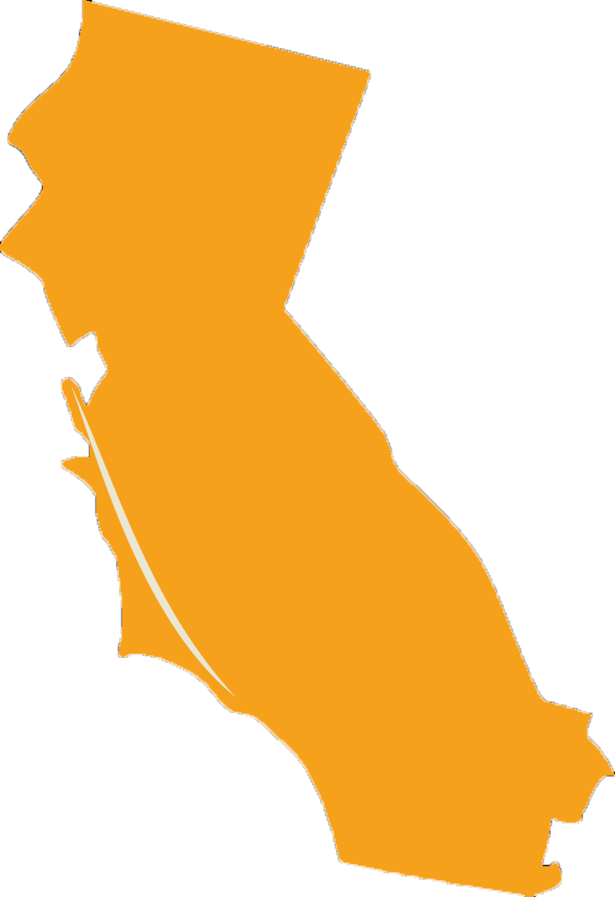
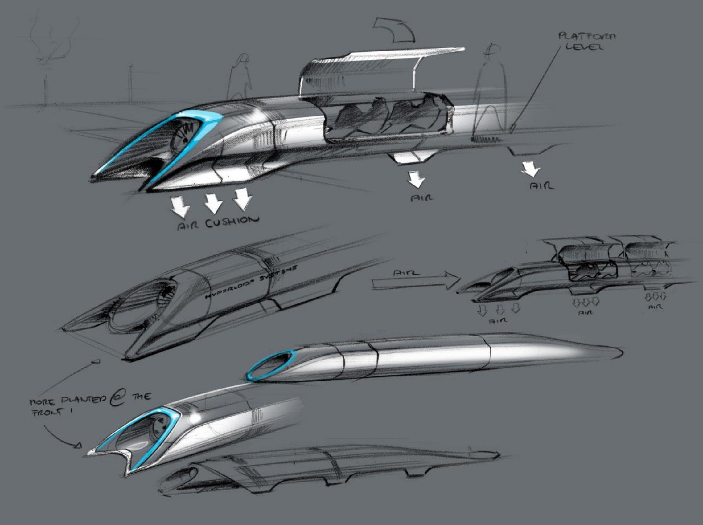

Purpose
Hyperloop is a high speed transportation system proposed by Elon Musk in 2013. After huge response from dubious government officials and media officials SpaceX announced a competition to build a pod by 2016. Over 100 teams from universities and companies globally commenced work to create the first working Hyperloop pod. The initial concept is designed to carry passengers from Los Angeles to San Franciso. We hope that over time the technology can be expanded to other regions.

Technology
Although Elon Musk published the first concept for Hyperloop his whitepaper left significant gaps in the methods needed to realize the technology. Solving the technical challenges created the framework for the Hyperloop competition. Along with solving technical problems a huge component of the competition consists of design and business challenges, all of which must be overcome by a small team.
